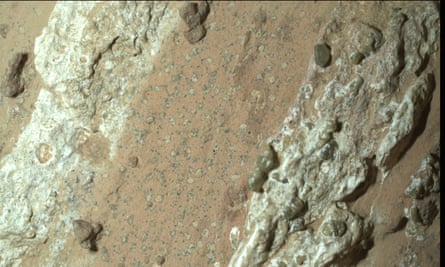

A spotty, vein-filled rock found by a Nasa rover on Mars contains features that suggest it may have hosted microbial life billions of years ago.
The arrowhead-shaped rock, named Cheyava Falls, was discovered by Nasa’s Perseverance rover on 21 July as it trundled along the northern edge of Neretva Vallis, an ancient river valley carved by water flowing into the red planet’s Jezero crater.
Analysis of the 3ft by 2ft rock revealed signs of organic material, intriguing surface spots similar to those associated with fossilised microbes on Earth and evidence that water once passed through the rock, the agency said.
Ken Farley, the project scientist on the mission at the California Institute of Technology, said Cheyava Falls was “the most puzzling, complex and potentially important rock yet investigated by Perseverance”, though the team make clear that non-biological processes may have given rise to the features.
“On the one hand, we have our first compelling detection of organic material, distinctive colourful spots indicative of chemical reactions that microbial life could use as an energy source, and clear evidence that water, necessary for life, once passed through the rock,” Farley said.
“On the other hand, we have been unable to determine exactly how the rock formed and to what extent nearby rocks may have heated Cheyava Falls and contributed to these features.”
Astrobiologists are excited by the ‘complex’ and ‘puzzling’ new piece of evidence.Photograph: Nasa/JPL-Caltech/MSSS
In the ancient past, Mars was a warmer, wetter planet. If life ever evolved there, researchers believe traces should remain within its rocks, in the form of organic material and potentially fossilised remnants.
Scans of the Cheyava Falls rock by Perseverance’s Sherloc instrument suggest it contains organic compounds. Such carbon-based molecules are regarded as the building blocks of life, but can also be produced by non-biological processes.
Large white veins of calcium phosphate run along the rock. Between them are bands of reddish material, likely haematite, one of the iron oxide compounds that gives Mars its rusty colour. Closer inspection of the bands revealed dozens of little leopard spot-like features. Each of the off-white spots is surrounded by a black ring containing iron and phosphate.
David Flannery, an astrobiologist at Queensland University of Technology in Australia and a member of the mission, called the spots “a big surprise”, because on Earth similar features “are often associated with the fossilised record of microbes”.
White spots can form on rocks through chemical reactions involving haematite, producing iron and phosphate, as well as energy that microbes could live on. While the features are intriguing, nothing seen yet appears to be an actual fossilised microbe.
Researchers are desperate to get their hands on samples for more thorough investigation, but Nasa’s plans to return the Mars rocks to Earth have run into difficulties .
The agency’s Mars sample return mission is over budget at $11bn (£8.5bn) and badly delayed with no prospect of bringing rocks back before 2040. Nasa is looking for companies to return Mars samples sooner and at lower cost.
“This is what Mars Sample Return is all about. We have never seen anything like this from Mars before, not in our Martian meteorite collections, not with Mars Science Laboratory or other landers,” said Prof John Bridges, a participating scientist on Nasa’s Mars Science Laboratory mission at the University of Leicester.
“The reality is we need to get these samples back on Earth to do the detailed electron microscopy and isotope analyses to check if these formed with ancient microbial action or abiotically,” Bridges said.
Prof Charles Cockell, an astrobiologist at the University of Edinburgh, said: “Although these features don’t provide unambiguous evidence of life, they do confirm that Mars was a very dynamic planet with all the ingredients for life, including organic carbon.
“We need to bring back samples, or in my view, even better, send humans, to find if we are seeing the signatures of life.”
Prof Monica Grady, a planetary and space scientist at The Open University, said: “This is a really amazing-looking rock. It makes my mouth water just to look at it. The combination of different types of minerals arranged the way they are reminds me of some of the textures found in ancient terrestrial rocks, where tracks of burrowing worms are preserved. Obviously, I’m not saying that there were burrowing worms on Mars – but I can’t wait to see what else Perseverance uncovers in this part of its exploration.”